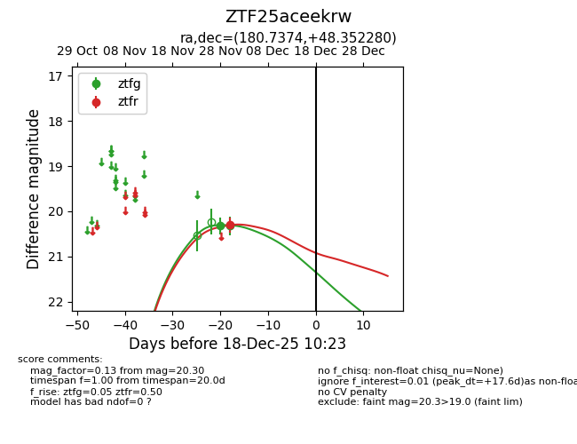
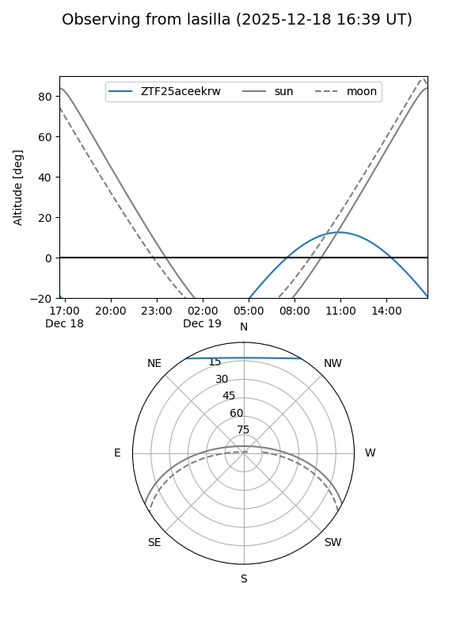
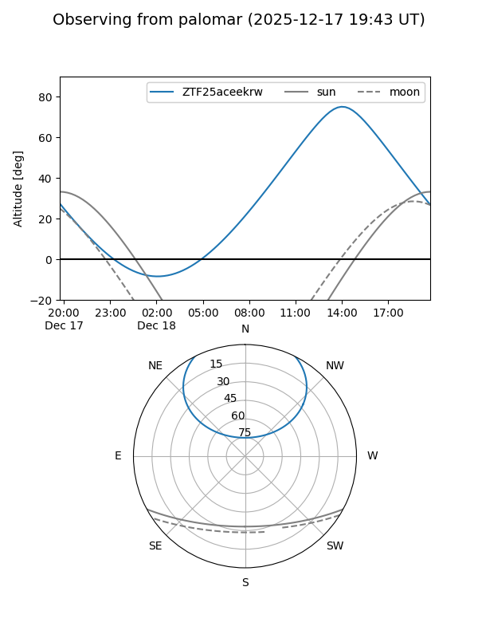

ZTF25aceekrw
Target ZTF25aceekrw at 2025-12-18 11:17
Aliases and brokers:
FINK: fink-portal.org/ZTF25aceekrw
Lasair: lasair-ztf.lsst.ac.uk/objects/ZTF25aceekrw
ALeRCE: alerce.online/object/ZTF25aceekrw
alt names
ZTF25aceekrw (ztf,fink_ztf)
Coordinates:
equatorial (ra, dec) = 180.7374,+48.35228
equatorial (HMS+DMS) = 12:02:56.97,+48:21:08.21
galactic (l, b) = (143.6598,+66.77804)
Photometry
last ztfg=20.32, ztfr=20.30
2 ztfg, 1 ztfr detections
Lightcurve

Visibility


Additional plots